Mad Asli [2 harakat]
+
[Al-Kahfi 18:8]
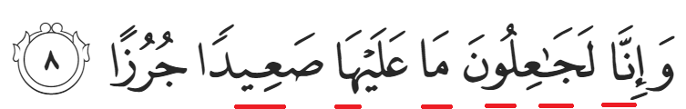
Mad Lin [2/4/6 harakat]
+ +
[Al-Balad 90:10]
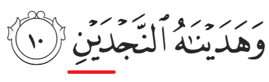
Mad 'Aridh Lissukun [6/4/2 harakat]
+ +
[Al-Fajr 89:17]
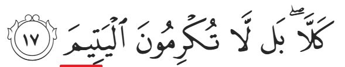
Mad Silah Thowilah [4/5 harakat]
+ +
[Al-Muthoffifin 83:12]
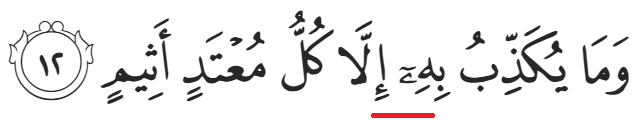
[Al-Baqarah 2:131]
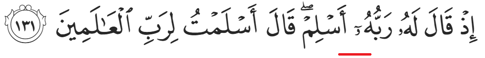
Mad Silah Qasirah [2 harakat]
+ +
[Al-Masad 114:4]
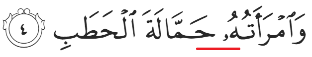
[Al-'Adiyat 100:6]
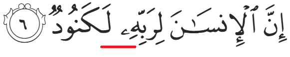
Mad Badal [2 harakat]
+
[Al-Baqarah 2:53]
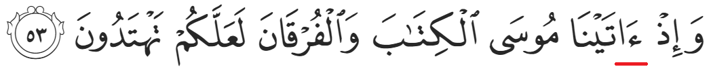
[An-Nur 24:37]
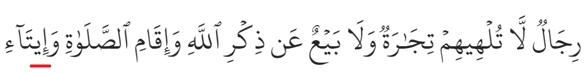
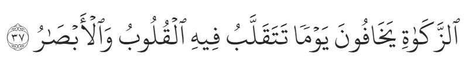
[Al-Bayyinah 98:4]
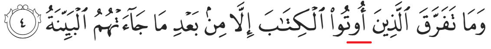
[Al-Ahqaf 46:4]
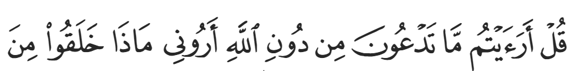
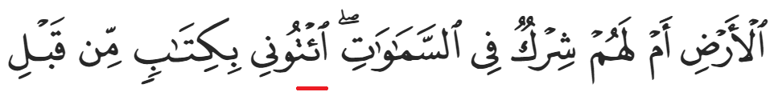
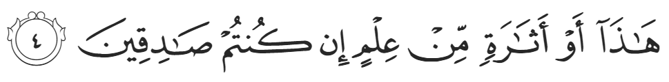
Mad Lazim Kalimi Mukhaffaf [6 harakat]
+
[Yunus 10:51]
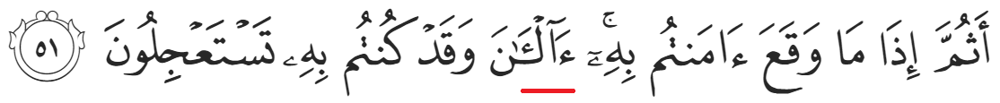
[Yunus 10:91]
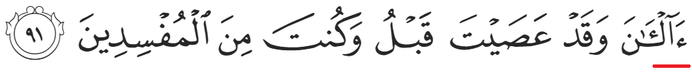
Mad Lazim Kalimi Muthaqqal [6 harakat]
+
[Al-Fatihah 1:7]
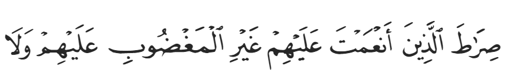
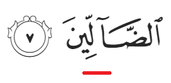
[Az-Zumar 39:64]
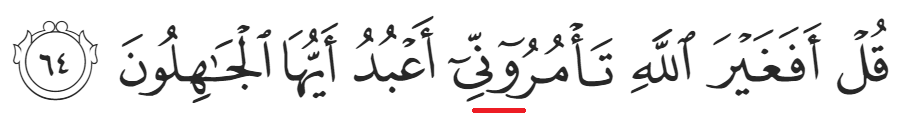
Mad Lazim Harfi Mukhaffaf [6 harakat]
+
[Yunus 10:1]
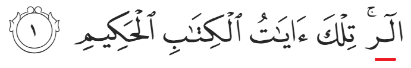
Bagi contoh di atas, cara ejaan huruf Lam ialah:
+ +
- Ada huruf mad (alif) bertemu dengan huruf mati (mim).
- Mad lazim harfi berlaku pada huruf muqatto'ah, di permulaan surah.
Mad Lazim Harfi Muthaqqal [6 harakat]
+
[Asy-Syu'ara' 26:1]
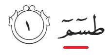
Bagi contoh di atas, cara ejaan huruf Sin ialah:
+ +
- Ada huruf mad (Ya) bertemu dengan huruf mati (nun).
- Nun mati tersebut bertemu pula dengan huruf mim selepasnya, maka terjadi idgham bighunnah (dengung 2 harakat).
- Mad lazim harfi berlaku pada huruf muqatto'ah, di permulaan surah.
Mad Wajib Muttasil [4/5 harakat. 6 harakat jika waqaf]
+
[An-Naba' 78:36]
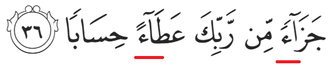
Mad Jaiz Munfasil [4/5 harakat]
+
[An-Nazi'at 79:18]
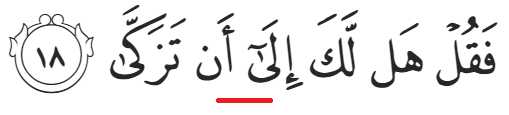
Mad Tamkin [2 harakat]
+
[An-Nas 114:5]
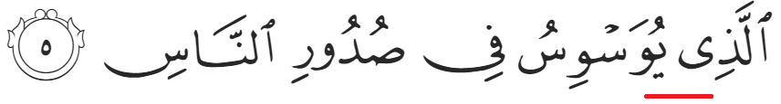
[Ali-'Imran 3:200]
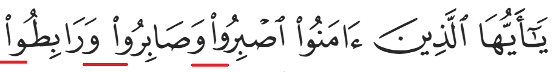
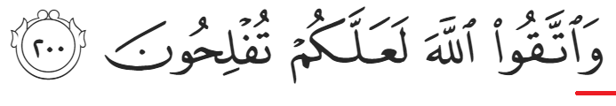
- Dinamakan juga mad tamkin pada keadaan berikut:
+
[Ali-'Imran 3:80]
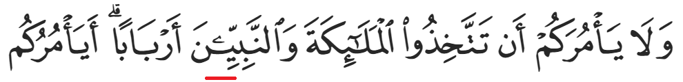
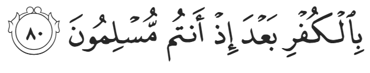